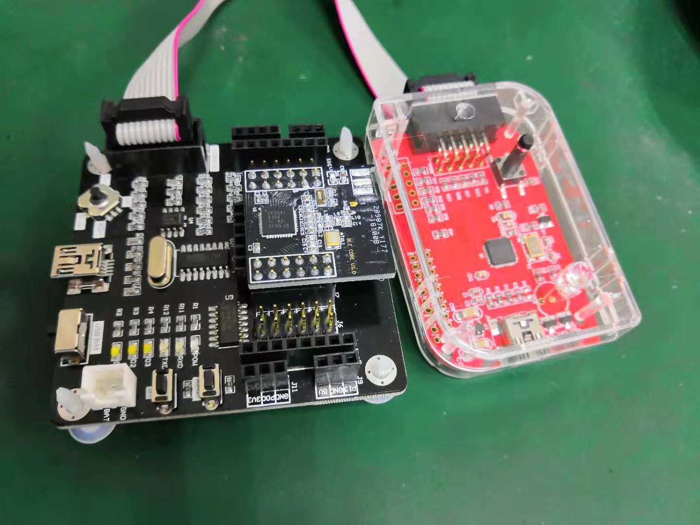

Bluetooth
就目前而言，设备带有蓝牙功能已经是很普遍的事情了，所以花点时间研究一下底层是如何实现的。在遇到问题的时候，了解底层工作原理可以更快速的定位问题可能出在数据处理的哪个阶段
参考文档
蓝牙官网：https://www.bluetooth.com/
蓝牙官方工具：Five Essential Tools for Every Bluetooth Low Energy Developer
CC2540 and CC2541 Bluetooth® low energy Software Developer’s (Rev. G)
CC2541 (ACTIVE) Bluetooth low energy and proprietary wireless MCU
C2540 and CC2541 Bluetooth low energy Software Developer’s Reference Guide.pdf
开发板的资料需要购买后问客服要，不过很多的资料也是从TI官网来的。
Hardware

docs
NO. |
文件名称 |
摘要 |
|---|---|---|
0013 |
蓝牙嗅探器空中包抓去 |
|
0012 |
BTool工具使用 |
|
0011 |
这部分可以跟的代码貌似不对，很多代码都是在库里调用，没有源代码 |
|
0010 |
Bluez HCI通信 |
|
0009 |
SimpleBLEPeripheral初始化分析 |
|
0008 |
SimpleBLEPeripheral GATT分析 |
|
0007 |
SimpleBLEPeripheral示例分析 |
|
0006 |
使用Android BLE工具连接测试CC2541 BLE |
|
0005 |
CC254x芯片参考手册 |
|
0004 |
TI BLE协议栈 |
|
0003 |
OSAL操作系统 |
|
0002 |
BLE基本概念 |
|
0001 |
CC2541开发工具 |